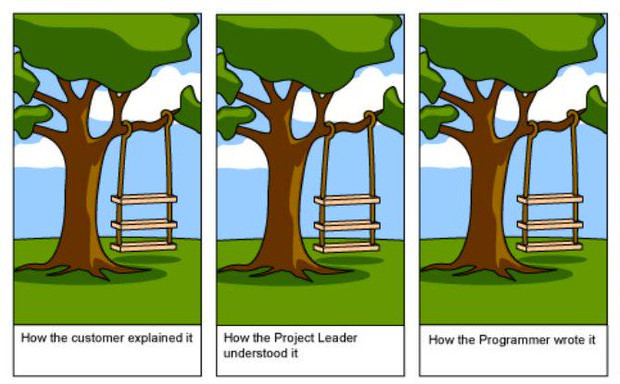

27 Novembre 2025 - Impact Hub, Firenze <!-- .element: class="negative fs-06" --> # Parlare la stessa lingua ## scrivere requisiti che diventano software <img class="w-25" src="./imgs/qr.png" /> <br/> <div class="centered-elements"> <img class="circular-img w-10 mr-1" src="./imgs/profile.jpg" /> `Lorenzo Bugli` \ Senior software engineer presso `Fiscozen` \ Membro community di `Schrödinger Hat` <!-- .element: class="fs-06 align-left" --> </div> --- # 👨🏻💼 🧑🏻💼 🧑🏻💻 <!-- .element: class="utf8-icon" --> # In ogni progetto software ci sono 3 ruoli --- # 👨🏻💼 <!-- .element: class="utf8-icon" --> ## Cliente --- # 👨🏻💼 <!-- .element: class="utf8-icon" --> Cliente - Vuole un `risultato` che risolva \ un problema di business <!-- .element: class="fragment align-left" --> - Pensa in termini di: \ `obiettivi`, `benefici`, `costi`, `tempi` <!-- .element: class="fragment align-left" --> - Non conosce (o non considera) \ i `vincoli tecnici` <!-- .element: class="fragment align-left" --> --- # 🧑🏻💼 <!-- .element: class="utf8-icon" --> ## Prodotto --- # 🧑🏻💼 <!-- .element: class="utf8-icon" --> Prodotto - È la "voce del prodotto": \ decide `cosa fare` e `perché farlo` <!-- .element: class="fragment align-left" --> - Traduce i bisogni del business \ in `requisiti di prodotto` <!-- .element: class="fragment align-left" --> - Bilancia `valore`, `costi`, `priorità`, \ `visione` e `fattibilità` <!-- .element: class="fragment align-left" --> --- # 🧑🏻💻 <!-- .element: class="utf8-icon" --> ## Sviluppo --- # 🧑🏻💻 <!-- .element: class="utf8-icon" --> Sviluppo - Lavora sul `prodotto reale` <!-- .element: class="fragment align-left" --> - Pensa in termini di: \ `requisiti tecnici`, `architettura`, `complessità` <!-- .element: class="fragment align-left" --> - È influenzato da `vincoli reali`: \ `tecnologia`, `codice legacy`, `tempo` <!-- .element: class="fragment align-left" --> --- # Il problema --- Le stesse parole assumono `significati diversi` a seconda del proprio `ruolo` --- "Serve una dashboard `semplice`" --- # 👨🏻💼 <!-- .element: class="utf8-icon" --> Cliente Deve essere `intuitiva` e `piacevole` <!-- .element: class="fragment" --> --- # 🧑🏻💼 <!-- .element: class="utf8-icon" --> Prodotto "Dashboard `minimale` con pochi KPI, \ entro la release" <!-- .element: class="fragment" --> --- # 🧑🏻💻 <!-- .element: class="utf8-icon" --> Sviluppo "`grafici`, `filtri`, `API`, \ `caching`, `gestione permessi`..." <!-- .element: class="fragment" --> ---  <!-- .element: class="w-100" --> --- # 🧑🏻💼 <!-- .element class="utf8-icon" --> Ma `Bob` potrebbe aver trovato \ una `Stele di Rosetta` --- # Chi è Bob? --- # 🧑🏻💼 <!-- .element class="utf8-icon" --> Bob è un `product manager` che \ lavora in un'azienda di consulenza software --- # 🧑🏻💼 <!-- .element class="utf8-icon" --> Ha ricevuto una richiesta da un `cliente` \ per una `nuova funzionalità` --- # 🧑🏻💼 📝 <!-- .element class="utf8-icon" --> Bob scrive le `specifiche` --- # 🧑🏻💼 📃 🧑🏻💻👩🏽💻👨🏼💻 <!-- .element class="utf8-icon" --> Le passa al team di `sviluppo` \ che inizia subito a lavorarci --- Dopo `3 settimane` \ arriva la demo --- # 🤦🏻 <!-- .element class="utf8-icon" --> "Ma non era questo che intendevo!" --- - Il software non fa quello che `dovrebbe` <!-- .element class="fragment" --> - `Rework` in emergenza <!-- .element class="fragment" --> - Il cliente è `scontento` per non dire di peggio <!-- .element class="fragment" --> --- # 🙍🏻 <!-- .element class="utf8-icon" --> "Quegli sviluppatori \ non capiscono mai quello che \ chiedo!" --- # 🧑🏻💼 <!-- .element class="utf8-icon" --> "Farò degli `schemi semplici` per farmi capire meglio!" --- # 🧑🏻💼 🪧 🧑🏻💻👩🏽💻👨🏼💻 <!-- .element class="utf8-icon" --> Bob inizia ad organizzare \ `meeting` con il `team di sviluppo` --- # 🧑🏻💼 🪧 🧑🏻💻👩🏽💻👨🏼💻 <!-- .element class="utf8-icon" --> Cosa succede \ in quei meeting? --- # 🧑🏻💻 <!-- .element class="utf8-icon" --> "E se l'utente fa X prima di Y, \ cosa succede?" --- # 👩🏽💻 <!-- .element class="utf8-icon" --> "Questo campo è obbligatorio \ solo a volte... quando esattamente?" --- # 👨🏼💻 <!-- .element class="utf8-icon" --> "Aspetta, ma quindi se... \ no, non ho capito..." --- # 🙍🏻 🪧 🧑🏻💻👩🏽💻👨🏼💻 <!-- .element class="utf8-icon" --> `Bob` è sommerso dalle domande --- # 🙍🏻 🪧 🧑🏻💻👩🏽💻👨🏼💻 <!-- .element class="utf8-icon" --> I meeting si allungano --- - `Incertezza` sullo sviluppo <!-- .element class="fragment" --> - L'inizio dei lavori viene `rimandato` <!-- .element class="fragment" --> - I tempi si `allungano` <!-- .element class="fragment" --> - Di nuovo, il cliente è `scontento` <!-- .element class="fragment" --> ---  <!-- .element: class="w-100" --> --- # 🧑🏻💼 <!-- .element class="utf8-icon" --> Bob decide di provare altri approcci --- ## Tentativo 1: User Stories ```text Come utente Voglio vedere i documenti colorati Per identificarli rapidamente ``` <!-- .element: class="fs-10" --> --- # 🧑🏻💻 <!-- .element class="utf8-icon" --> "Ma... `quali` colori? `Quando`?" - Troppo `generica` <!-- .element: class="fragment" --> - Mancano i `dettagli` di implementazione <!-- .element: class="fragment" --> - Non è `verificabile` <!-- .element: class="fragment" --> --- ## Tentativo 2: Acceptance Criteria ```text ✓ I documenti devono avere colori ✓ I colori devono essere appropriati ✓ Il sistema deve essere consistente ``` <!-- .element: class="fs-10" --> --- # 🧑🏻💻 <!-- .element class="utf8-icon" --> "Cosa significa `appropriati`?" - Ancora troppo `vago` <!-- .element: class="fragment" --> - `Interpretabile` in modi diversi <!-- .element: class="fragment" --> - Nessun `esempio concreto` <!-- .element: class="fragment" --> --- # 🙍🏻 <!-- .element class="utf8-icon" --> "Nessuno di questi funziona davvero!" --- Serve un modo per scrivere requisiti che: - Abbiano un formato \ `comprensibile` a tutti <!-- .element: class="fragment" --> - Non lascino spazio a \ `interpretazioni` <!-- .element: class="fragment" --> - Stimolino le `domande giuste` <!-- .element: class="fragment" --> --- Questa è la storia di come la \ `Gherkin syntax` ha aiutato `Bob` --- # 👨🏻💼 <!-- .element class="utf8-icon" --> `Mario` è un imprenditore e vuole \ un `software` per la sua azienda --- # 👨🏻💼 🧑🏻💼 <!-- .element class="utf8-icon" --> `Mario` commissiona un \ software a `Bob` ed il suo team --- # 👨🏻💼 💬 🧑🏻💼 <!-- .element class="utf8-icon" --> `Bob` parla con `Mario` \ per raccogliere le informazioni --- # 📑 <!-- .element class="utf8-icon" --> Il software richiesto è un `documentale` \ per la gestione dei documenti aziendali --- Tra le tante specifiche \ c'è anche la `gestione dei colori` \ per identificare meglio i documenti --- # 🧑🏻💼 📝 <!-- .element class="utf8-icon" --> Bob scrive i `requisiti` \ da passare al team di sviluppo --- ```text[|1-2|3-5|6-9] Il sistema deve associare a tutti i documenti firmati digitalmente il colore verde. Tutti i documenti di tipo distinte materiale devono essere associati al colore giallo. I documenti in lavorazione devono essere associati al colore rosso a meno che non siano di tipo disegno tecnico, in quel caso devono avere il colore blu. ``` --- Sono dei requisiti chiari? --- # 🧑🏻💼 📝 <!-- .element class="utf8-icon" --> - frasi in italiano corretto <!-- .element: class="fragment" --> - indicano condizioni e risultati <!-- .element: class="fragment" --> - usano termini comuni <!-- .element: class="fragment" --> --- # 🧑🏻💻 <!-- .element class="utf8-icon" --> Se li guardiamo con gli occhi \ di uno sviluppatore --- # 🧑🏻💻 <!-- .element class="utf8-icon" --> ```text[] Il sistema deve associare a tutti i documenti firmati digitalmente il colore verde. Tutti i documenti di tipo distinte materiale devono essere associati al colore giallo. I documenti in lavorazione devono essere associati al colore rosso a meno che non siano di tipo disegno tecnico, in quel caso devono avere il colore blu. ``` ```[] Documento: - stato: str # es. in lavorazione, firmato digitalmente, ... - tipo: str # es. distinta materiale, disegno tecnico, ... - is_firmato_digitalmente: bool # true/false ``` <!-- .element class="fs-08 fragment" --> --- # 🧑🏻💻 <!-- .element class="utf8-icon" --> ```text[] Il sistema deve associare a tutti i documenti firmati digitalmente il colore verde. Tutti i documenti di tipo distinte materiale devono essere associati al colore giallo. I documenti in lavorazione devono essere associati al colore rosso a meno che non siano di tipo disegno tecnico, in quel caso devono avere il colore blu. ``` <br/> "Di che `colore` sono le \ `distinte materiale` in `lavorazione`?" --- # 🧑🏻💻 <!-- .element class="utf8-icon" --> ```text[] Il sistema deve associare a tutti i documenti firmati digitalmente il colore verde. Tutti i documenti di tipo distinte materiale devono essere associati al colore giallo. I documenti in lavorazione devono essere associati al colore rosso a meno che non siano di tipo disegno tecnico, in quel caso devono avere il colore blu. ``` <br/> "Cosa succede per i `disegni tecnici` `firmati digitalmente`?" --- # 🧑🏻💻 <!-- .element class="utf8-icon" --> - Specifica aperta ad `interpretazioni` <!-- .element: class="fragment" --> - Specifica manca di `precisione` <!-- .element: class="fragment" --> - Specifica non `esaustiva` per tutti i casi <!-- .element: class="fragment" --> --- Problema dell'interpretazione <img class="" src="./imgs/analisys-misunderstanding.png" /> --- Problema del telefono senza fili <img class="" src="./imgs/telefono-senza-fili.png" /> --- # 🧑🏻💻 <!-- .element class="utf8-icon" --> `Franco` è uno dei programmatori Bob --- # 🧑🏻💻 🧑🏻💼 <!-- .element class="utf8-icon" --> Leggendo le specifiche di `Bob` gli chiese di riportarle in un modo diverso --- Gli chiese di scriverle in questa notazione ```gherkin[] Dato [contesto iniziale] Quando [azione dell'utente] Allora [risultato atteso] ``` <!-- .element class="fs-15" --> --- # 🧑🏻💻 🧑🏻💼 <!-- .element class="utf8-icon" --> "Si chiama Gherkin syntax, provala!" --- - Passaggio da linguaggio naturale a specifico per esempi <!-- .element: class="fragment" --> - Limitazione del lessico <!-- .element: class="fragment" --> - Vincolo di 1 solo caso per paragrafo <!-- .element: class="fragment" --> --- # 🧑🏻💻 <!-- .element class="utf8-icon" --> "Se ci scrivi TUTTI i possibili casi in questo modo sono convinto che andremo meglio!" --- # 🙍🏻 <!-- .element class="utf8-icon" --> `Bob` è scettico \ ma tanto vale provarci --- ```text[] Il sistema deve associare a tutti i documenti firmati digitalmente il colore verde. Tutti i documenti di tipo distinte materiale devono essere associati al colore giallo. I documenti in lavorazione devono essere associati al colore rosso a meno che non siano di tipo disegno tecnico, in quel caso devono avere il colore blu. ``` <!-- .element class="fs-08" --> --- ```text[] Il sistema deve associare a tutti i documenti firmati digitalmente il colore verde. ``` <!-- .element class="fs-08" --> ```gherkin[|1|2|3|] Dato un documento "firmato digitalmente" Quando il sistema assegna un colore al documento Allora il colore associato al documento è il "verde" ``` <!-- .element class="fs-08" --> --- ```text[] Tutti i documenti di tipo distinte materiale devono essere associati al colore giallo. ``` <!-- .element class="fs-08" --> ```gherkin[|1|2|3|] Dato un documento di tipo "distinta materiale" Quando il sistema assegna un colore al documento Allora il colore associato al documento è il "giallo" ``` <!-- .element class="fs-08" --> --- ```text[] I documenti in lavorazione devono essere associati al colore rosso a meno che non siano di tipo disegno tecnico, in quel caso devono avere il colore blu. ``` <!-- .element class="fs-08" --> ```gherkin[|1|2|3|5|6|7|8] Dato un documento in lavorazione NON di tipo "disegno tecnico" Quando il sistema assegna un colore al documento Allora il colore associato al documento è il "rosso" Dato un documento in lavorazione di tipo "disegno tecnico" Quando il sistema assegna un colore al documento Allora il colore associato al documento è il "blu" ``` <!-- .element class="fs-08" --> --- ```gherkin[] Dato un documento "firmato digitalmente" Quando il sistema assegna un colore al documento Allora il colore associato al documento è il "verde" Dato un documento di tipo "distinta materiale" Quando il sistema assegna un colore al documento Allora il colore associato al documento è il "giallo" Dato un documento in lavorazione NON di tipo "disegno tecnico" Quando il sistema assegna un colore al documento Allora il colore associato al documento è il "rosso" Dato un documento in lavorazione di tipo "disegno tecnico" Quando il sistema assegna un colore al documento Allora il colore associato al documento è il "blu" ``` <!-- .element class="fs-06 h-25 hide-scrollbar" --> --- # 🧑🏻💼 📝📝📝 <!-- .element class="utf8-icon" --> Scenario dopo scenario... --- # 🙍🏻 <!-- .element class="utf8-icon" --> "Sto impiegando il `doppio del tempo` \ rispetto a prima!" --- # 🙍🏻 <!-- .element class="utf8-icon" --> Scrivere in Gherkin richiede \ `più sforzo` all'inizio - Devi pensare a `tutti i casi possibili` <!-- .element: class="fragment" --> - Devi essere `preciso` e `specifico` <!-- .element: class="fragment" --> - Non puoi più essere `vago` <!-- .element: class="fragment" --> --- "Ma ne vale davvero la pena?" --- # 🧑🏻💼 <!-- .element class="utf8-icon" --> Bob decide di continuare... --- # 🧑🏻💼 <!-- .element class="utf8-icon" --> Bob legge i requisiti scritti in questo modo e inizia a scriverne `un altro` per completare il quadro --- ```gherkin [] Dato un documento in lavorazione NON di tipo "disegno tecnico" Quando il sistema assegna un colore al documento Allora il colore associato al documento è il "rosso" Dato un documento in lavorazione di tipo "disegno tecnico" Quando il sistema assegna un colore al documento Allora il colore associato al documento è il "blu" ``` <!-- .element class="fs-08" --> ```gherkin [|1|2|3|] Dato un documento di tipo "disegno tecnico" NON in lavorazione Quando il sistema assegna un colore al documento Allora il colore associato al documento è il "????" ``` <!-- .element class="fs-08" --> --- # 🧑🏻💼 <!-- .element class="utf8-icon" --> "Come ho fatto a non accorgermi?" --- Quando scrivi in linguaggio comune non ti accorgi delle `mancanze` e delle eventuali `contraddizioni` --- Legge una riga alla volta e va avanti reputandola corretta --- # 🧑🏻💼 <!-- .element class="utf8-icon" --> `Bob` continua a scrivere --- - firmato + distinta materiali \ → verde o giallo? <!-- .element: class="fragment" --> - firmato + in lavorazione \ → verde o rosso? <!-- .element: class="fragment" --> - firmato + in lavorazione + disegno tecnico \ → verde o blu? <!-- .element: class="fragment" --> --- La scrittura in `Gherkin syntax` \ ha aiutato `Bob` a localizzare dei casi \ non considerati prima --- # 👨🏻💼 🧑🏻💼 <!-- .element class="utf8-icon" --> `Bob` torna da `Mario` per chiedere chiarimenti sulle specifiche --- # 👨🏻💼 📝 🧑🏻💼 <!-- .element class="utf8-icon" --> `Mario` capisce subito quello che `Bob` \ ha scritto, fornisce subito le risposte --- Anche se risulta `meccanico` e `artificiale` è molto `efficace` ```gherkin [] Dato un documento di tipo "disegno tecnico" NON in lavorazione Quando il sistema assegna un colore al documento Allora il colore associato al documento è il "????" ``` <!-- .element class="fs-08" --> --- - Grazie agli esempi concreti, `Mario` può dare risposte `precise`. - Tutti i `comportamenti attesi` sono chiari e condivisi. <!-- .element: class="fragment" --> - I meeting sono `brevi` e non finiscono `fuori tema` <!-- .element: class="fragment" --> --- <img class="" src="./imgs/tree-2.jpg" /> --- # 🧑🏻💼 <!-- .element class="utf8-icon" --> `Bob` è molto soddisfatto \ il rapporto con il cliente è molto `facilitato` --- # 🧑🏻💼 <!-- .element class="utf8-icon" --> Tutti i dubbi si sono risolti --- # 🙎🏻 <!-- .element class="utf8-icon" --> `Bob` è comunque scettico verso gli sviluppatori --- # 🙎🏻 <!-- .element class="utf8-icon" --> "Speriamo che questo progetto \ non finisca male per l'ennesima volta!" --- # 🧑🏻💻 🧑🏻💼 <!-- .element class="utf8-icon" --> `Bob` torna da `Franco` per portargli le specifiche riscritte --- # 🧑🏻💻 <!-- .element class="utf8-icon" --> `Franco` finisce il lavoro in metà tempo <!-- .element: class="fragment" --> --- # 🧑🏻💼 <!-- .element class="utf8-icon" --> Bob non ci crede --- # 🧑🏻💼 <!-- .element class="utf8-icon" --> "Impossibile! \ Come ha fatto?" --- # 🧑🏻💼 <!-- .element class="utf8-icon" --> "Sarà sicuramente codice spazzatura! \ Sarà pieno di bug!" --- Non ci sono bug e tutto funziona --- # La faccia di Bob <img class="w-50" src="./imgs/the-what-face.png" /> --- Ma come ha fatto? --- ## Quando si sviluppa del software - Si scrive il `codice` del programma <!-- .element: class="fragment" --> - Si fanno dei `test manuali` per verificare il funzionamento <!-- .element: class="fragment" --> --- # 🧑🏻💻 <!-- .element class="utf8-icon" --> `Franco` usa uno sviluppo inverso: - Configura dei `test automatici` <!-- .element: class="fragment" --> - Scrive il `codice` del programma <!-- .element: class="fragment" --> --- I `test automatici` \ definiscono il `funzionamento atteso` \ prima che le funzionalità siano create <!-- .element: class="align-left" --> --- Ogni volta che una `funzionalità` viene implementata si eseguono i `test automatici` <!-- .element: class="align-left" --> - Se i `test` non mostrano `anomalie` il programma funziona correttamente <!-- .element: class="fragment align-left" --> - Se qualcosa si rompe, i test lo dicono `subito` e si può correggere l'errore <!-- .element: class="fragment align-left" --> --- I test permettono a `Franco` \ di lavorare `velocemente` <!-- .element: class="" --> --- Ma cosa c'entra tutto questo discorso la Gherkin syntax? <!-- .element: class="" --> --- `Bob` ha già fatto metà \ del lavoro di `Franco` ```gherkin[] Dato un documento di tipo "distinta materiale" Quando il sistema assegna un colore al documento Allora il colore associato al documento è il "giallo" ``` <!-- .element class="fs-08" --> Ogni `specifica` può essere trasformata \ in un `test automatico` <!-- .element class="fragment" --> --- ```gherkin Dato documento di tipo distinta materiale ``` <!-- .element: class="fs-10" --> ```python @given("documento di tipo distinta materiale") def crea_documento_distinta(): # codice per creare il documento ``` <!-- .element: class="fs-10" --> Vedete la corrispondenza? <!-- .element: class="fragment" --> --- ```gherkin Quando il sistema assegna un colore al documento ``` <!-- .element: class="fs-10" --> ```python @when("il sistema assegna un colore al documento") def assegna_colore(): # codice per assegnare il colore ``` <!-- .element: class="fs-10" --> La specifica diventa codice eseguibile <!-- .element: class="fragment" --> --- ```gherkin Allora il colore associato è il GIALLO ``` <!-- .element: class="fs-10" --> ```python @then("il colore associato è il GIALLO") def verifica_giallo(): assert documento.colore == GIALLO ``` <!-- .element: class="fs-10" --> Il test verifica automaticamente! <!-- .element: class="fragment" --> --- ## Lo scenario Gherkin ```gherkin[] Feature: Gestione Colori documenti Scenario: Distinta materiale in lavorazione Dato un documento di tipo "distinta materiale" Quando il sistema assegna un colore Allora il colore deve essere "giallo" ``` <!-- .element: class="fs-08" --> --- ## Il test in Python (Behave) ```python [|3,7,11|] from behave import given, when, then @given('un documento di tipo "{tipo}"') def crea_documento(context, tipo): context.documento = Documento(tipo=tipo) @when('il sistema assegna un colore') def assegna_colore(context): context.colore = assegna_colore_documento(context.documento) @then('il colore deve essere "{colore_atteso}"') def verifica_colore(context, colore_atteso): assert context.colore == colore_atteso, \ f"Atteso {colore_atteso}, ottenuto {context.colore}" ``` <!-- .element: class="fs-06 h-30" --> --- ## Esecuzione del test ```bash [] $ behave features/colori_documenti.feature Feature: Colori documenti Scenario: Distinta materiale in lavorazione Dato un documento di tipo "distinta materiale" ✓ Quando il sistema assegna un colore ✓ Allora il colore deve essere "giallo" ✓ 1 feature passed, 0 failed 1 scenario passed, 0 failed 4 steps passed, 0 failed ``` <!-- .element: class="fs-07" --> Il test `passa` ✅ \ Il requisito è `implementato correttamente` <!-- .element: class="fragment" --> --- ## E se il test fallisce? ```bash [|8|] $ behave features/colori_documenti.feature Feature: Colori documenti Scenario: Distinta materiale in lavorazione Dato un documento di tipo "distinta materiale" ✓ Quando il sistema assegna un colore ✓ Allora il colore deve essere "giallo" ✗ Assertion Failed: Atteso giallo, ottenuto rosso FAILED (1 scenario failed) ``` <!-- .element: class="fs-07" --> Il test dice `esattamente` dove e `cosa` non funziona <!-- .element: class="fragment" --> --- Ogni `scenario` descrive \ un `comportamento specifico` \ senza ambiguità --- # 🧑🏻💻 ➡️ 🤖 <!-- .element class="utf8-icon" --> `Franco` ha fatto diventare tutti gli scenari dei `test automatici` --- - `Bob` ha scritto tutti gli scenari \ insieme allo `stakeholder` <!-- .element: class="fragment" --> - `Franco` ha creato il software a \ partire dagli scenari di `Bob` <!-- .element: class="fragment" --> --- # 👨🏻💼 ➡️ 📝 ➡️ 🤖 ➡️ ✅ <!-- .element class="fs-20" --> Cliente -> Requisiti -> Test -> Verifica ```gherkin [] Given un documento in lavorazione di tipo "disegno tecnico" When il sistema assegna un colore al documento Then il documento deve essere BLU ``` --- - `Comunicazione` chiara tra tutti <!-- .element: class="fragment" --> - `Verifica` automatica dei requisiti <!-- .element: class="fragment" --> - Meno `ambiguità` e `malintesi` <!-- .element: class="fragment" --> --- # ⏱️ <!-- .element class="utf8-icon" --> Tre settimane dopo... --- # 👨🏻💼 💬 🧑🏻💼 <!-- .element class="utf8-icon" --> `Mario` chiama `Bob`: "Ho ripensato ai colori dei documenti..." --- # 🧑🏻💼 <!-- .element class="utf8-icon" --> "Oh no, `di nuovo`..." <!-- .element: class="fragment" --> --- # 🙍🏻 <!-- .element class="utf8-icon" --> "I documenti in `lavorazione` dovrebbero essere `arancioni`, non `rossi`" --- Con il vecchio sistema - Bob deve `riscrivere` tutto il paragrafo <!-- .element: class="fragment" --> - Rischio di introdurre `nuove ambiguità` <!-- .element: class="fragment" --> - Gli sviluppatori dovrebbero \ `rileggere tutto` <!-- .element: class="fragment" --> --- # 🧑🏻💼 <!-- .element class="utf8-icon" --> ## Con Gherkin ```gherkin [|3|] Dato un documento in lavorazione NON di tipo "disegno tecnico" Quando il sistema assegna un colore al documento Allora il colore associato al documento è il "rosso" ``` <!-- .element: class="fs-08" --> Cambio `chirurgico` su una sola riga <!-- .element: class="fragment" --> --- # 🧑🏻💼 <!-- .element class="utf8-icon" --> ## Con Gherkin ```gherkin [|3|] Dato un documento in lavorazione NON di tipo "disegno tecnico" Quando il sistema assegna un colore al documento Allora il colore associato al documento è il "arancione" ``` <!-- .element: class="fs-08" --> Modifica precisa, zero ambiguità <!-- .element: class="fragment" --> --- # 🧑🏻💻 <!-- .element class="utf8-icon" --> `Franco` aggiorna il test ```python[|3|] @then('il colore deve essere "{colore_atteso}"') def verifica_colore(context, colore_atteso): assert context.colore == colore_atteso ``` <!-- .element: class="fs-08" --> Il test `fallisce` subito: \ "Atteso arancione, ottenuto rosso" <!-- .element: class="fragment" --> --- # 🧑🏻💻 <!-- .element class="ut8-icon" --> `Franco` corregge il codice ```python if documento.stato == "in_lavorazione": return ARANCIONE # era ROSSO ``` <!-- .element: class="fs-10" --> Esegue i test: `tutto verde` ✅ <!-- .element: class="fragment" --> --- # 🧑🏻💻 <!-- .element class="utf8-icon" --> I test verificano `automaticamente` \ che il cambio non abbia rotto altro - 15 scenari ancora funzionanti ✅ <!-- .element: class="fragment" --> - Tempo totale: `10 minuti` <!-- .element: class="fragment" --> - Zero regressioni <!-- .element: class="fragment" --> --- # 👨🏻💼 <!-- .element: class="utf8-icon" --> ## Il cliente <br/> Ottiene un prodotto che \ `rispecchia le sue richieste` <!-- .element: class="fragment" --> --- # 🧑🏻💼 <!-- .element: class="utf8-icon" --> ## Il business <br/> Ha requisiti `chiari` e `condivisi` \ con tutto il team <!-- .element: class="fragment" --> --- # 🧑🏻💻 <!-- .element: class="utf8-icon" --> ## Gli sviluppatori <br/> Sanno `esattamente` cosa implementare \ senza ambiguità <!-- .element: class="fragment" --> --- # 🤖 <!-- .element: class="utf8-icon" --> ## I test <br/> Verificano `automaticamente` \ che il software faccia ciò che deve <!-- .element: class="fragment" --> ---  --- # 🧑🏻💼 <!-- .element class="utf8-icon" --> Ogni mattina `Bob` si sveglia --- # 🧑🏻💼 <!-- .element class="utf8-icon" --> Bob scrive `specifiche` \ tramite la `Gherkin syntax` --- # 🧑🏻💻 <!-- .element class="utf8-icon" --> Ogni mattina `Franco` si sveglia --- # 🧑🏻💻 <!-- .element class="utf8-icon" --> `Franco` sa che può lavorare \ trasformando i `requisiti` di `Bob` \ in `test` per i software --- - Le `stime` sono `affidabili` <!-- .element: class="fragment" --> - I rilasci sono `nei tempi` <!-- .element: class="fragment" --> - Il cliente è `soddisfatto` <!-- .element: class="fragment" --> --- # 🧑🏻💼 🧑🏻💻 <!-- .element class="utf8-icon" --> Che tu sia `Bob` oppure `Franco` --- L'importante è che quando ti svegli tu sappia riscrivere la specifica più confusa del tuo backlog nel formato: <!-- .element: class="align-left" --> <br/> ## Dato → Quando → Allora <br/> E condividerla col tuo team <!-- .element: class="fragment align-left" --> --- 27 Novembre 2025 - Impact Hub, Firenze <!-- .element: class="negative fs-06" --> # Grazie! <img class="w-25" src="./imgs/qr.png" /> `Lorenzo Bugli` \ Senior software engineer presso `Fiscozen` \ Membro community di `Schrödinger Hat` <!-- .element: class="fs-06" --> --- Riferimenti <img class="w-50" src="./imgs/cucumber-logo.png" /> [https://cucumber.io/](https://cucumber.io/) <img class="w-25" src="./imgs/cucumber-qr-code.png" /> <br/> <br/> <br/> <br/> <img class="w-50" src="./imgs/product-heroes-squad-logo.png" />